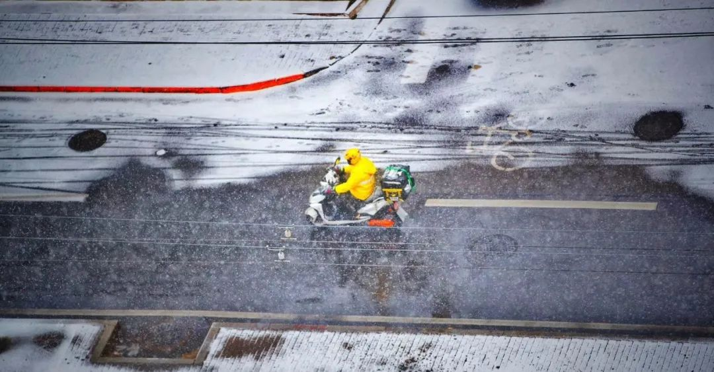
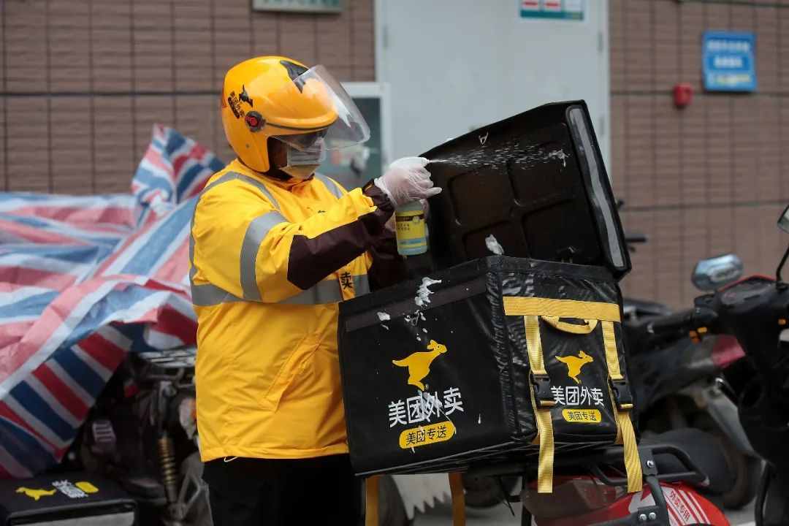
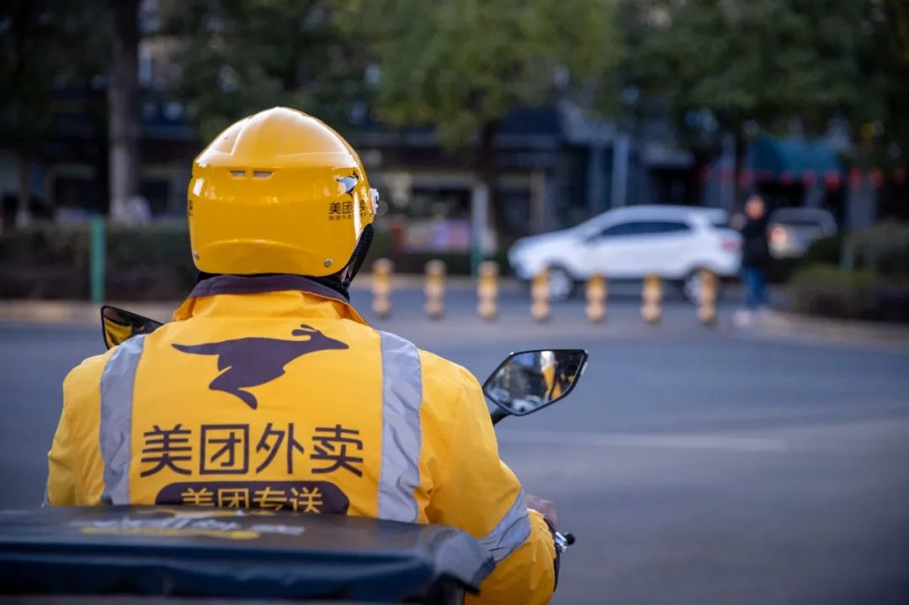
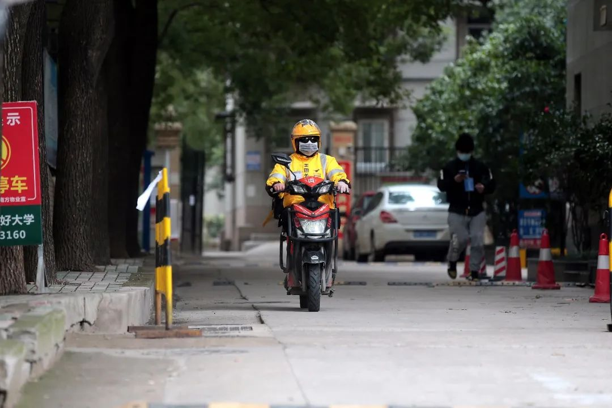
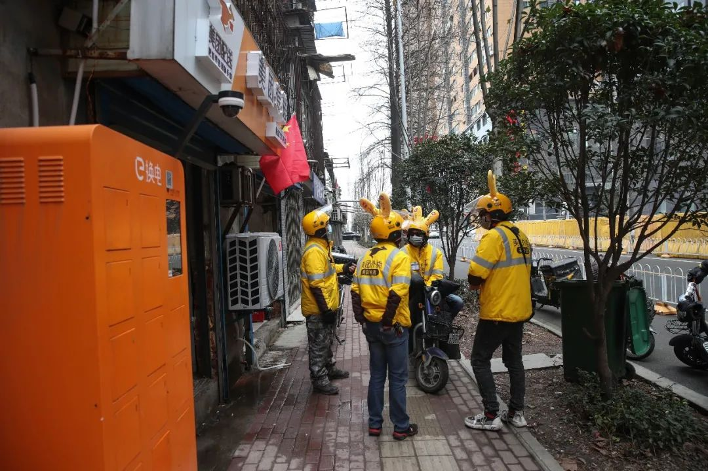
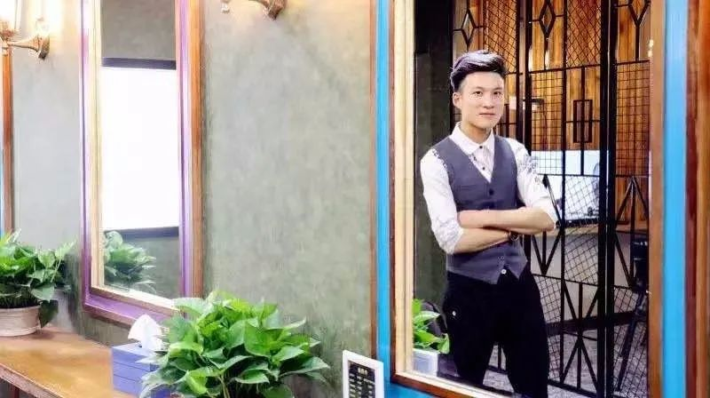
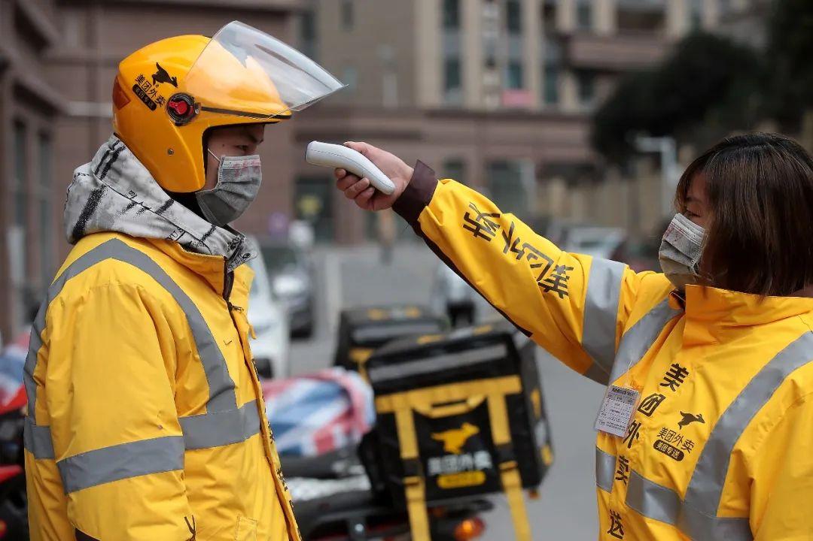

武汉外卖小哥：害怕是正常的，但我希望自己一直是冷静的
原文链接 备份链接 ** 在武汉这座几乎停摆的城市里，一群外卖小哥和他们背后的团队还在正常运转。他们需要每天前往收治新冠肺炎的定点医院，给一线医护人员送餐，是连接这座城市的动线。这项“医护关爱计划”，是在1月26日开始的，饿了么联 …
多年以后，理发师高为谋如果还在干这行，准会想起2020年春天这个特殊的二月二。这一天，他打工的理发店仍旧闭着门，座椅上落满灰，彩虹灯也不亮了，打开微博，呼唤“Tony老师”的声音遍地都是。
而他，正在南京的街头送外卖。
Tony老师是对理发师群体的一种善意调侃。疫情之下，人们一个月居家未出，男女老少，发丝枝蔓，无比怀念曾经不以为意的理发师。理发师去哪儿了？他们中有人为即将上前线的医护人员理发，降低他们感染病毒的几率，也维持着美丽和尊严。但更多的人，因为疫情开不了工。

原定于正月十四返沪的按摩技师贾鹏飞，留在了北方小城宝鸡。按摩店一直关着门，老板不说，大家也都只能心照不宣。程序员张琦在数月前辞职，换了城市，打算重新开始，疫情让他的求职蒙上了一层阴影。在这个过于漫长的冬天，寻找一份付出与回报成正比的工作，并没那么容易。还有昆明一家洗车场的老板、90后创业者高鹏，他看着怀孕的新婚妻子，推迟开张、生意冷清的洗车场，这位年轻人决定无论如何，都要承担起父亲、丈夫的责任。
他们也选择了骑上自动车，开始送外卖。四人的故事是疫情期间中国用工形态转移的缩影。来自美团的数据显示，从2020年1月20日到2月23日，7.5万名劳动力成为他们的新骑手，这一数据还在稳步增长，这家企业预期将以长期就业和灵活就业相结合方式向全国提供逾20万个工作岗位。

成为骑手之前，贾鹏飞从未真正了解过送外卖这个职业。在上海工作的日子，他曾在一家便利店里，与一位湖南的外卖小哥有过一次短暂交集。当时已经晚上10点，他买了一份便当，趴在便利店的就餐区，神情疲惫。从早上7点到10点，他已经在街上奔波了15个小时。贾鹏飞询问他的收入，他说有8000元到12000元，有时候也只能拿到7000多。辛苦——是贾鹏飞对骑手这份工作的印象。
现在，他开始重新认识这个行当。这份工作看似简单，其实也需要诸多服务技巧。几天前，因为着急赶路，洒了点汤出来，他又没沟通好，顾客给了一个差评。不过，也有一些温暖的时刻。有一次，晚上10点半他送餐时，发现顾客已经在门口等了好久。那天夜里挺冷温度在零下。走的时候，他跟贾鹏飞说“注意安全”。他们的故事是疫情中无数普通人的写照。生活遭遇困境，他们选择面对，寻找出路，也重新审视责任、亲情与爱情。
以下是他们的口述：

我从2月3日开始送外卖，还不满一个月。其实是没有选择了才做这个选择。
我今年24岁，河南人，现在在江苏扬州生活。上一份工作是敲代码的，在北京。程序员这种职业，看起来似乎很忙，但其实不同的公司不一样。有那种死命加班累得要死要活的公司，也有业务进入稳定期，能比较规律上下班的公司。我之前的工作属于后面这种。
之前的公司实在太悠闲了，工作挺轻松的，感觉没有什么发展前途，也学不到东西。我们的项目经理在那儿待了好多年，才混到那个位置。签五年合同，就可以在北京摇车、买房，但是我不想过那种日子了，就离职了。
一开始是打算换一家公司的。中间因为一些事耽搁了，几个月没找工作。前段时间，有个关系好的网友问我要不要来扬州发展。我这个人很佛系，去过很多城市，对大家都在意的食物、气候都无感，所以对在哪个城市生活无所谓。在北京待着也没觉得特别好，别人跟我说可以换个环境。我想那就试试呗，就来扬州了。
之前我以为扬州是个二线城市，工作机会应该不少。到了才发现其实这里没有太多的岗位可选。比如我想找的程序员岗就没那么好找，这里对它的需求并不大。扬州的普遍工资水平也不敢恭维，基础岗位比如保安和洗车工，一个月工资也就三四千块钱。
来了之后租了个公寓。一开始不知道市场行情，是按照北京的心里价位租的。后面发现其实租贵了，也没有办法了。过年的时候一个人在这边，哪里也去不了，待在租的公寓里。因为不太会做饭，每天点外卖。
本来打算年后找工作的，没想到碰上了这场疫情。疫情期间更加没有公司招人，可以选择的机会就更少了。公寓每个月有房租，真是计划赶不上变化。反正最后看下来，感觉送外卖还算是不错的选择。当骑手门槛低，虽然累，工资相比其他的工作还是要高一点。

受疫情影响，最近订单不是特别多。早晨一般没有什么单，我九点到十点才出门，中餐时间忙一点，到下午两三点又闲下来了，晚餐时会忙一阵。之后就没什么订单了，我八九点就回去了，特殊时期对我这种新手来说可能是个缓冲。
我以前天天点外卖，什么情况都碰到过。最极端的一次，我点的饭菜超时一个小时送到的。当时骑手解释说摔了一跤，我朋友特别生气，我倒觉得还好。还有一次，点餐等太久我太饿就又点了一单。饭都吃完了，第一份单才送到。顾客点餐最基本的需求不就是让餐比较快地完整送到么。
等我自己送外卖了，就发现时间真的很紧。因为人手少，最近系统派的单有些不太顺路。商家人手也不够，出餐比较慢。我们送的那片有个商场，不让骑手进去，有单子需要商家送下来。商家店里可能也只有一个人，有时好多单一起做了送下来。
我前几天就送了一单，拿到餐的时候就已经超时三分钟了。另外有时候导航不太准。因为疫情有些路封掉了，路线会有点绕。这些都可能导致超时。不过，疫情期间，小区不让进，东西都直接放门口，倒是帮我节省了点时间。
可能从骑手到顾客大家都要互相体谅一下吧。前两天汤撒了，客观讲，确实责任不在于我，商家的餐盒比较薄，全碎了，汤就撒了，不是晃出来的。那一单是酸菜鱼，应该是48块钱，我就跟客户说加微信赔给他。
48块钱，我当时说赔就赔了。没转变思路来，其实像我这种一单五块钱挣辛苦钱的人，不应该这么想。不过顾客回家处理了一下，跟我说不用赔钱。他们人还挺好的。
我到现在遇到的顾客都挺好说话的。新手经常会遇到的问题，比如超时、餐撒了或者拿错餐，其实我都犯了。但顾客都比较体谅，可能这和我认错态度挺好也有关系，知道错了我就认错。

不管是对着电脑还是骑电动车在外面跑，对我而言都是工作。一些资深的骑手，基本全年无休，我现在才干一个月还没感到特别累。之前天天坐办公室看着电脑，按时按点下班，有周六周末休息，相比较而言，当然是骑手更累一点。但有句话说得好，“怕累当什么骑手呢”，来干骑手不就是因为这里收入跟付出成正比，只要努力肯干，工资就会不错。
扬州的房租我交了六个月，先看看情况，也是在适应这份工作和这个城市。我也没想好后面的生活。我写代码有几个月的空档了，不知道现在这种形势下后面还好不好找工作。当然也有可能当骑手得心应手了，工资也还可以，然后就一直做这行。

2月3日，正月十四，我做美团骑手的第一天，一共送了7单。
第一单是一碗米线，顾客是一位30多岁的女性。那天天气晴好，风很大，路上没有人，商铺大多关门，街道空荡荡的。她居住的小区是一家工厂的员工宿舍。我取了餐送到大门口，等了3分钟，她从楼里跑出来，我隔着门把装着米线的塑料袋递给她，她说了声谢谢，转身走了。
如果没有这场疫情，这一天将是我返回上海的日子。我是青浦区一家按摩店的康复理疗技师。我在上海生活了4年，喜欢那里湿润的气候，以及城市的文明和精致。我印象很深的一个细节是，在上海，你不能直接用手拿吃的给别人，必须拿盘子托着或用夹子夹着递过去。
到今年，我从事按摩行业已经11年了。上海的按摩店包吃住，每天工作12个小时，多劳多得，每月工资到手8000元～10000元。在宝鸡，这算是一笔不菲的收入。我原本计划继续沪漂，挣几年钱再做打算，但疫情改变了一切。
1月20日，我从上海回宝鸡过年。疫情急转直下，上海的按摩店关张。正月初一，我就和同事私下讨论，复工的时间或将延长，甚至可能需要另做打算。整家按摩店一共有40多位员工，食宿已是不小的开支。老板不说什么时候重新开张，我们也不多问，大家心照不宣。
正月初七之后，陆续有七八位同事回沪，至今没有工资，老板仅承担餐饮，但不再负担住宿费。像我一样就地就业的，也有七八个人。
我有家有口，不能一直赋闲在家，于是决定留在宝鸡当美团骑手。我的一位发小做了近半年的骑手。我们很久没有联系，春节闲聊时他告诉，在宝鸡，美团骑手的收入可观，于是决定试试看。

宝鸡是一座关中小城，人口不到上海的零头，我在这里出生、成长，也在这里结婚生子。正月初一，陕西省启动突发公共卫生一级响应。恐慌蔓延到了故乡这座小城。商店相继关门，市民开始闭门不出，外卖骑手成为城市的刚需。
谁都知道疫情汹汹，在外奔波有风险。但是，我们这种年轻力壮的不出来，还能指望谁出来跑呢？于是，1月30日，我通过朋友介绍，去见了现在的站长，第二天便领了工作服。他也是这个站点的骑手，我们现在成了同事。
上岗第一天， 上午十点，站长安排了一位老骑手跟我一起送单。他在一旁观摩，指点我操作流程，诸如手机上如何接单、取餐、配送等。一般来说，从骑手接单到配送完成，需要30分钟，这其中还包括餐厅制作的时间。
下午两点多，我开始独自送餐。因为疫情，我们这个片区，开门营业的仅有一家牛肉面馆、一家米线馆，还有几个商超市和药店。和其他的城市一样，宝鸡最繁忙的地方也是医院。在关中小城，恐惧同样在蔓延。城市突然空了，市民闭门在家，安静得让我陌生。
因为疫情的缘故，最近我经常想起从前当护士的日子。我是护理学毕业的，在成为按摩师之前也曾做过呼吸内科的护士。春节之后，六位昔日同窗，已经相继奔赴武汉一线。我在新闻里，看到医护年夜饭吃泡面，说不出的心酸。如果当年没有转行，不知道我现在是否也在武汉。
2003年非典肆掠，我正好在吉林省吉林市一家三甲医院实习。我和几位同学被调去了该医院的传染科支援，负责照顾、隔离发热病人。当时的防护条件远没有今天好，没有N95、防护服、护目镜，只有48层的纱布口罩。每隔三小时，我们就需要去更换口罩，用热水清洗，然后消毒、晾干。我们的纱布口罩挂在晾衣绳上，白茫茫一片。那一年我19岁，年轻气盛，不知道什么叫害怕，几个年轻护士还在病房里陪发热患者玩游戏。
幸运的是，吉林市没有一例“非典”患者，我们也全部平安。不过，那家医院的护士长去了北京地坛医院支援。当年，这家医院被称为“非典医院”，收治了大量的患者，医护感染率很高。
她回东北的时候已经是夏天了。许多事我已经忘了，但清晰地记得，她说在北京，给患者扎针时，需要戴三层塑胶手套，穿着厚厚的防护服。“一位优秀的护士，需要具备这样的技能——即便戴三层手套，也能找准血管，把针推进去。”她说。
一些事情必须有人去做，她做了她应该做的事。

毕业之后，同窗好友各自奔去了全国各地的医院。当时我太年轻，欲望很多，想法也很多。护士的工资偏低，不能满足我。短暂地从事了半年医护工作之后，我选择离开吉林，去西安另谋生路。我后来发现，那一年毕业的男同学，几乎全都转行了。
四五年里，我干了无数职业，包括建筑工人、磨眼镜片工人等等。直到2009年，我重拾护理相关的工作，转行成为一名按摩技师。2015年冬天，为了更好的发展，我开始沪漂。离开陕西之前，我结了婚。上海房价高昂，落户定居显得不太现实，所以妻子留在了宝鸡。
因为疫情，我重新审视自己的职业选择，说不后悔是假的。人生不只有短期的利益考量，还有职业价值、尊严等等，当年不能理解，现在理解了已经是中年人了。如果有重来的机会，既然学了护理，我会在这条路上走得更远。
我很钦佩那些“逆行”去武汉的同学，这种勇气，不是每个人都拥有的。其中一位女孩，一直坚守在重症病房。几天前，她在微信里跟我们讲述一线的经历：一个病房里，5位护士照顾8位病人，一天晚上，她一个人换了13罐氧气。前几天，她恰好生理期，因为防护服珍贵，需尽量减少穿脱，一天工作下来，裤子都湿透了。
我的孩子今年四岁，是我的软肋。如果做骑手能有不错的收入，又能留在宝鸡照顾家人，我也会考虑长期做下去。20多天过去了，虽然有委屈，有不愉快，但也有收获。我的预期收入是5000～8000。现在，企业已经有序复工，路上有时候还会堵车，高峰时期的订单量开始多了。但愿一切慢慢向好。
没有疫情，我可能还是会做外卖骑手。
我是昆明人，1992年出生，辗转广州、上海之后，几年前回昆明安家定居。去年12月，我结婚时，妻子已经怀有身孕。她之前在美甲店工作，因为妊娠反应，婚后辞职在家待产。一人吃饱，全家不饿的日子过去了，我突然意识到作为一个丈夫和父亲的责任。
4年前，我们一家和表哥一家一共投资50万，开了一家洗车场。我和弟弟两个人参与运营，既当老板，也要当工人。洗车场如今已经走上正轨，投资的本金基本赚回来了。按照约定，除了年终分红，我和弟弟两个人轮流去洗车场上班，领一份工资，每月3000元。
孩子即将要到来，对于我而言，这工资远远不够。
一月初，我开始在58同城上找工作。因为当过司机，又开洗车场，我优先考虑的是网约车司机。但是在昆明，网约车的水很深。我在网上看到一些帖子，有人被黑中介坑骗，交了几千块也没开上车。于是，我开始考虑外卖骑手，这份工作相对自由、灵活，门槛也不算太高。
经过面试之后，1月20日我正式成为美团的骑手。说来也巧，站点就在我家隔壁楼栋，上班、沟通都很便捷。那时候，妻子已经回了娘家，我自己独居。临近春节，昆明依然热闹，外卖订单很多，忙的时候我一天能送36单，算起来，一个月能有6000元～7000元的收入。
然而，仅仅三天之后，武汉的疫情恶化，昆明的氛围也变得紧张起来。洗车场暂停营业了，各家各户也闭门不出。正月初一那天，我经常送外卖的小区，出现了一例确诊病例。
我刚上班几天，就遇到这样的情况，完全是意料之外。妻子得知此事之后，立即给我打电话，“别跑了，回家吧。”她焦急地说。
我也想过要不算了，不要工资了，打退堂鼓回家吧。新冠肺炎有14天的潜伏期，当时我并不知道自己是否安全，如果贸然回家，传染给她怎么办？此外，这是创业四五年后，第一份正式工作，临阵脱逃不负责任。考量在三，我决定不回家，继续送外卖。

春节原本是云南的旅游旺季，因为疫情，旅游市场滑入冰点。人流减少，景点关门，市民闭门不出，外卖订单大幅减少。城里仍然坚持营业的，只有少量的餐饮店、水果店和药品店。今年冬天，昆明的天气比往年冷，初一那天还下了雪。
妻子每天给我打电话，询问身体状况，关心防护措施。她每天抱着手机等我的消息，我给她发微信，她随时都是“秒回”。她有四个月身孕，妊娠反应很严重，让她担忧，我感觉非常愧疚。
我也送过一些医院的订单，水果、餐饮等等，有的送给医护，有的送给住院的病人。春节期间，美团都是无接触配送，所以我并没有特别恐惧。再说，灾难真的要来临，恐惧也是没用的。不过，我从来不会告诉父母和妻子，我往医院送餐。
疫情对洗车场的影响很快显现出来。往年，我们通常正月初六就开张了。初八前后是生意最好的几天，一天能洗70多辆车，有时候甚至忙得没时间吃早餐。今年，因为疫情，开业的时间一再推迟，一直到2月26日。而且，即便营业，生意也异常冷清。
我们的洗车场有200平米，一年的租金是12万，关门歇业一天都是不小的损失。现在想想，我出来做骑手的选择是对的，能减轻不少负担。
我没有上大学，18岁出来工作，在一家化工厂里当工人，工资每月2400元，工厂包吃住。从工厂辞职之后，我去叔叔承包的建筑工地当过工人，学驾照当过司机，也去上海广州打过工。时间过得很快，一晃已经十年了。洗车场的生意何时能恢复正常，目前仍是未知数。不过，我对未来依然抱有乐观的态度，疫情终将过去。
现在，昆明已经开始有序复工，外卖的订单逐步增加，我每天都能送30多单。春城的天气回暖，风和日丽，在路上奔波也不觉得辛苦。
除夕那天，我跟妻子因为一些小事发生口角。她在电话里赌气说：“这个家你不想回来永远别回来了。”我脾气不好，又在气头上，当天就没有回家。正月初一，送餐的小区发现确诊病例，我回不去了。为此，我一直充满了愧疚。疫情过去之后，我希望好好补偿她。
洗车场是我的事业，如果经营状况良好，我希望未来能开分店。至于骑手这份工作，我暂时还不确定，是否会一直做下去，但在岗的每一天，我都会尽职尽责。
高为谋，95后理发师，南京
特殊时期送外卖攒点钱，支持小梦想

我是98年生的，在南京送外卖快一个月了。我老家在安徽凤阳县，凤阳离南京很近，开车两个多小时，老家有很多人都在南京工作。
2018年夏天，我高中毕业之后没考上好学校，也不想复读，就来到了南京。凤阳是个小地方，毕业后我还是想出来闯一闯。爸妈也在南京打工，我爸在化工厂，我妈在电子厂。他们本来也想带我去工厂，我觉得在工厂太枯燥了，还是想学门手艺。
我看到有理发店招学徒，觉得这个行业“挺酷的”，就想着学学美发，将来可以自己开个店。
学了有一年多，现在还是学徒，感觉这个行业周期有点长，一般都要学三四年才能出师，有点动摇。之前一年多，每个月都只能挣一千多，生活上还是需要家里补贴一些。
春节前我就在网上看到了消息，说武汉那边有肺炎，没感觉很严重，我1月19日就回家过年了。过完年，27号我回了南京，那时候大巴还是通的，后来村里也封路了。
来南京的路上，我感觉到疫情严重了。上车和下车都要检查体温，在苏皖交界的地方也检查了一次，进入南京的时候还要扫二维码登记。到了之后，又在家里隔离了14天，之后拿到居委会开的证明才能出门。
来的时候我就知道，理发店没开门，开业时间还要另行通知。
但我想不能闲着。在家隔离的时候，我就开始在网上找工作，在58同城上看到了美团在招骑手，就报名了。面试之后，他们把我分到了南钢这边的站点。
最开始是培训，跟着师父跑了两天，熟悉整个送餐流程。特殊时期，上岗之前还做了安全培训，主要是讲疫情和行车安全。美团给我们提供口罩，上班时间每四小时换一次，还有一次性的手套、酒精，和免洗的洗手液。
每天早上，站点都会给骑手统一消毒，每次送完一单和回到站点，又要消一次毒。口罩是要全程戴着的。现在不戴口罩都进不去商场取餐，不然别人看你可能就像怪物一样。每个骑手还配了安心卡，每天要记录体温、消毒的情况，然后拍照上传。

疫情严重，美团推出了“无接触配送”。在商家取餐之后，一般是送到小区门口的指定地点，再通知顾客下来拿。大多数的小区现在都进不去，就只能送到门口。
我也遇到过不太好说话的顾客，他非要我送上楼去，也不相信我的解释，还说要投诉我。我站在小区门口说了半天，最后也没办法，保安给他送过去了。遇上这样不好说话的顾客，头疼死了。
大多数顾客还是挺好的。有人就会让你把餐放在指定地点，拍张照就行了，也不用在那里等着。还有顾客会说，现在疫情严重，你们出来送餐也不容易，我觉得很暖心。
一次有顾客点了汤包和面条，我想着快点送过去，面条干了就不好吃了，送到之后，他还打赏了我八块八。钱我不在意，但顾客给了我好评。还有一次，我送了一单到特警队，点单的姐姐在备注上写：老公记得注意防护，再忙也得好好休息，按时吃饭。我觉得这些都很暖心。
我们站点周围有两个医院，一个是南钢医院，一个是中大医院，我也去过好多次。之前紧张的时候，南钢医院离大门口一段距离就有一个体温测量点，还要登记身份证号码，送餐也要放在取餐点，不能上楼。最近两天可以送上楼去了。
这两个医院都不是定点医院，现在人也很少。我也没觉得紧张，做好防护就行，没必要给自己太大的心理压力。
医院里的单大多数都是医护人员点的。我送去医院的一单，一个护士小姐姐点了几份炒饭，她跟我说，现在疫情严重，你们出来送餐也挺不容易的，还给了我一瓶酸奶，我心里挺暖的。我没有什么别的东西，我只能给她们送送餐，她们也挺不容易的，我心里也想着，赶紧给她们送过去，让她们能吃口热饭。
美发行业学成之后，在南京一个月能拿大几千，但竞争还是激烈，也挺辛苦的。每天早上九点营业，晚上要是有客人来烫头的话，那就要等烫完才能休息了。
找骑手工作的时候没想太多，觉得只要防护做好了，应该没什么事。因为外卖员一直都在上班，也不是我一个人，街上的环卫工人也在工作。这两天街上的店铺已经慢慢开始营业了。
以前感觉，外卖行业每天跑东跑西，也不容易。现在我每天工作八九个小时，分早中晚三班，每周还可以选择休息一天。我是新手，每天送个三四十单吧，算了算，加上奖金和补贴什么的，应该可以拿到四五千块钱。

我是独生子，爸妈刚开始还是挺担心的，他们说送外卖接触的人多，我就跟他们解释，会自己做好防护，站点也会给我们消毒。他们的厂子都还没有开工，还在老家。
我想着，疫情结束了再接着干一段时间，送餐也还行，给自己攒点积蓄。之后，还是想去学门手艺，看看有什么好的行业。我们老家人很多在这边开饭馆，还有其他各行业打工的，我可能也考虑一下学一下厨师什么的。
人都是有点小梦想的，我还是想，自己要有点积蓄，来支持自己的小梦想。
**本文仅代表作者观点，不代表平台立场
**
原文链接 备份链接 ** 在武汉这座几乎停摆的城市里，一群外卖小哥和他们背后的团队还在正常运转。他们需要每天前往收治新冠肺炎的定点医院，给一线医护人员送餐，是连接这座城市的动线。这项“医护关爱计划”，是在1月26日开始的，饿了么联 …
原文链接 备份链接 他们都有着细碎的烦恼、担忧、庆幸与反思疫情如洪水涌来，没有人能全身而退。 何时能完全恢复正常是大家都关心的问题。解封复工的消息不断传来，公园的花开了，路上的车多了起来，城市复活了。有人回归车间和工位，更多人早已开始远程 …
原文链接 备份链接 本文是协作者在“农民工抗疫救援行动”中，针对困境农民工家庭开展的个案访谈之一，旨在快速识别疫情中的脆弱人群及其需求，为疫情防控和救援工作提供参考，我们整理出来与你分享。 疫情下的深呼吸 ——困境农民工家庭个案实录（九） …
原文链接 备份链接 本文是协作者在“农民工抗疫救援行动”中，针对困境农民工家庭开展的个案访谈之一，旨在快速识别疫情中的脆弱人群及其需求，为疫情防控和救援工作提供参考，我们整理出来与你分享。 疫情下的深呼吸 ——困境农民工家庭个案实录（七） …
原文链接 备份链接 在餐饮业遭受重创的相关新闻下，通常会有两种声音。一种鼓励店家们再坚持一会，另一种则忧心忡忡，「现在蔬果好贵，有的人在隔离期间还不开工资，出现报复性消费，又能持续多久呢？手上的钱都紧得很，我是不敢再大手大脚花钱了。」 …